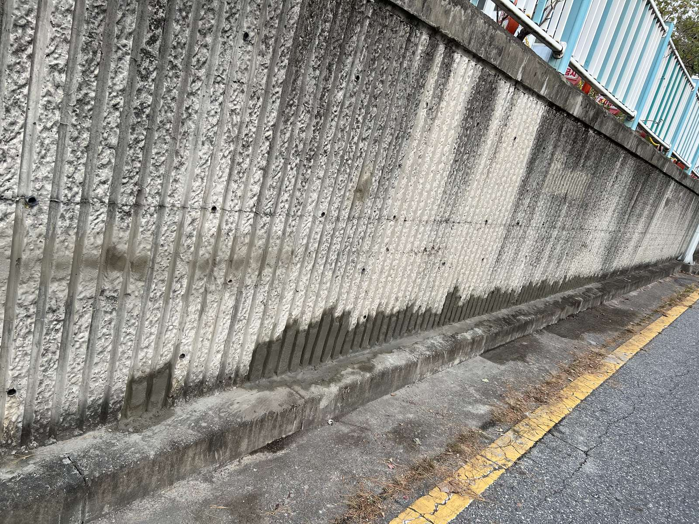
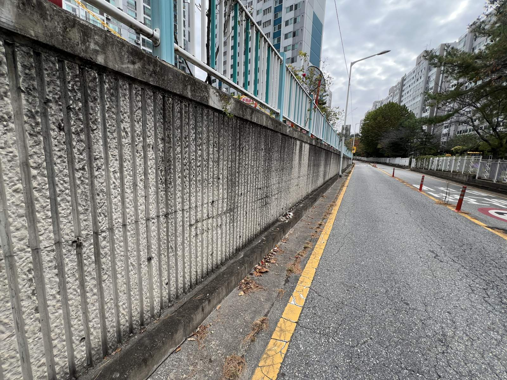
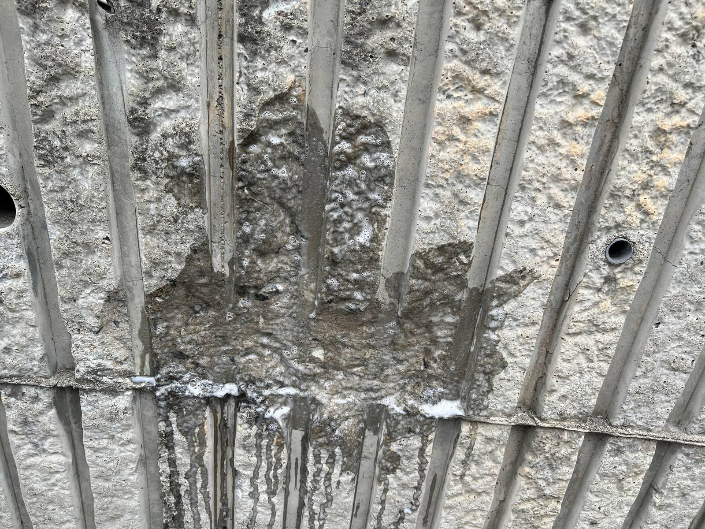
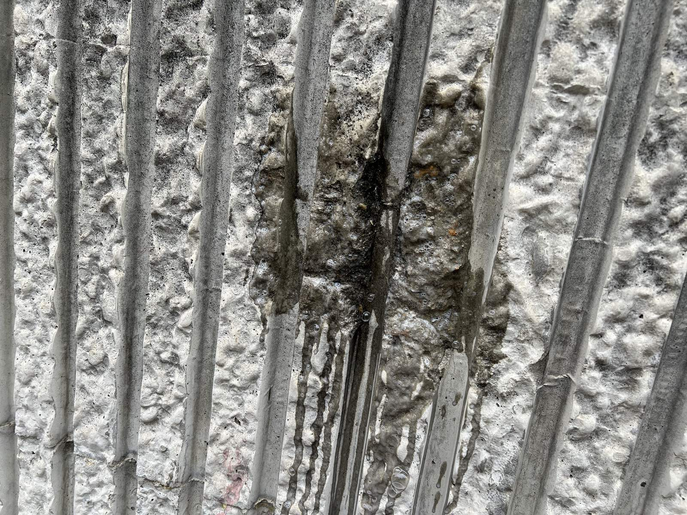
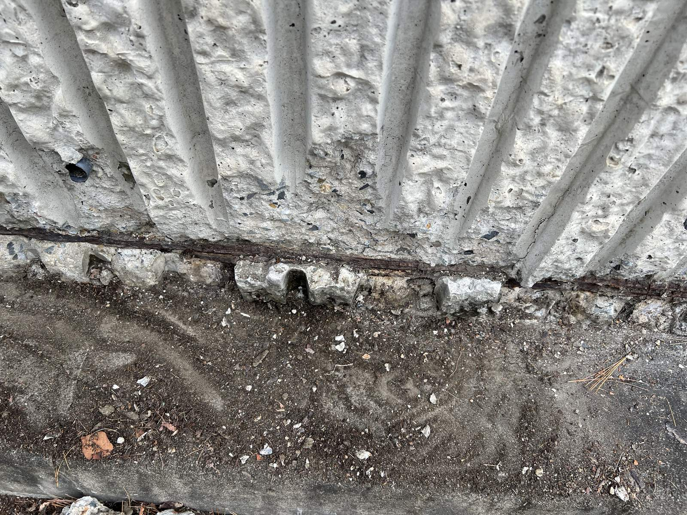
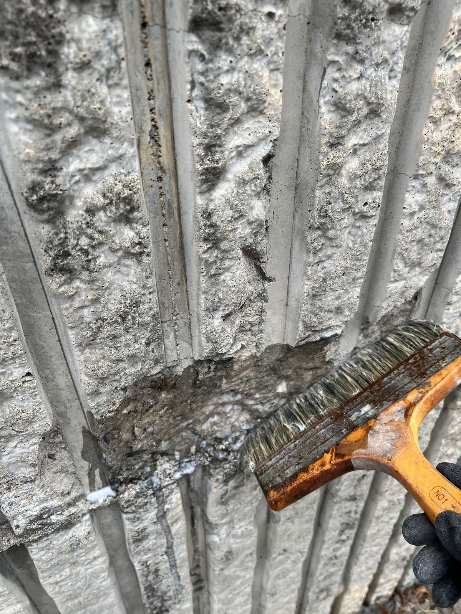
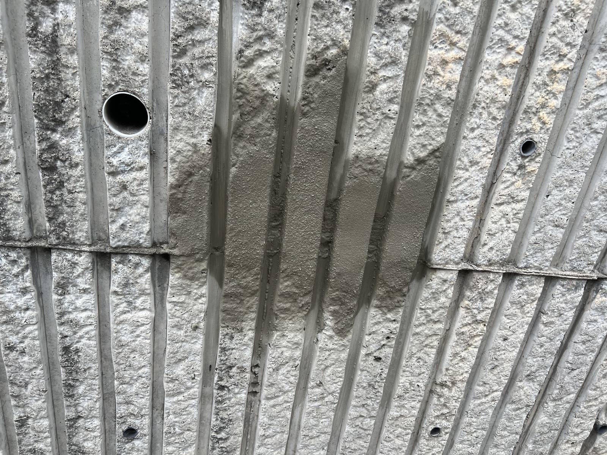
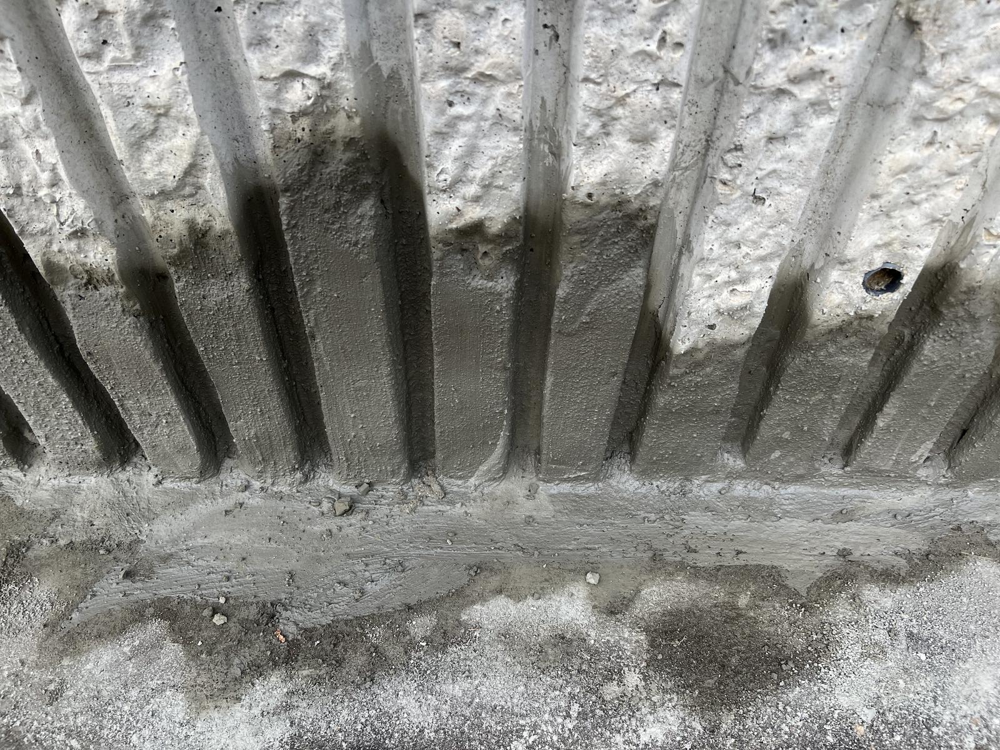
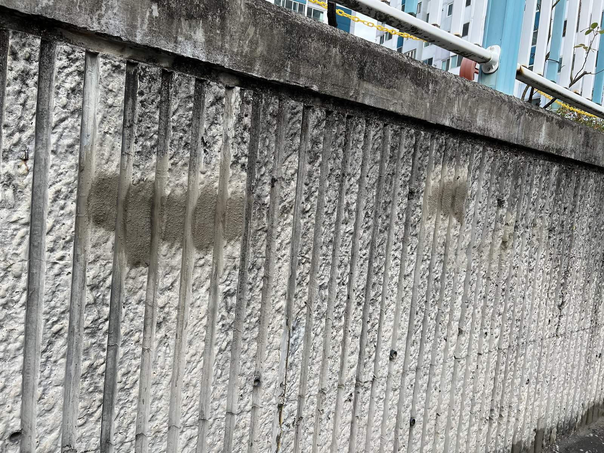

대전 송촌동 선비마을 1단지 외벽 미장 보수｜떨어져 나간 옹벽 면을 다듬고 몰탈로 메워 마감

현장 작업 한눈에 보기
- 현장
- 대전 선비마을 1단지 · 단지 도로변 옹벽(외벽)
- 문제
- 표면이 떨어져 나가고 얼룩이 남은 옹벽 면
벽 밑단의 부스러기·벌어진 틈 - 작업
- 들뜬 부분 제거·바탕 정리 후 접착 바탕 도포
몰탈로 메우고 밑단까지 보강 마감 - 결과
- 미장 마감 사진 확인
부착 시험 결과·소요시간은 미기재
대전 대덕구 송촌동 선비마을아파트 1단지 단지 안 도로변 옹벽(외벽) 미장 보수 기록입니다. 표면이 떨어져 나간 자리의 들뜬 부분을 걷어 내고 접착 바탕을 바른 뒤 몰탈로 메워 벽 밑단까지 마감하기까지 사진 9장으로 소개합니다.
1. 작업 전 단지 도로변 옹벽
대전 대덕구 송촌동 선비마을아파트 1단지의 외벽 미장 보수 현장입니다. 단지 안 도로를 따라 길게 이어진 세로 줄무늬 콘크리트 옹벽으로, 2026년 11월 3일 사진을 순서대로 소개합니다.
작업 전에는 벽 곳곳의 표면이 떨어져 나가 있었고, 벽과 도로가 만나는 밑단에는 부스러기와 흙이 쌓여 있었습니다.

2. 표면이 떨어져 나간 자리
가까이 보면 줄무늬 사이의 표면이 떨어져 나가 거친 속면이 드러나 있고, 그 아래로 얼룩이 흘러내린 자리가 여러 곳 있었습니다.

3. 얼룩과 함께 패인 부분
다른 자리는 세로 줄을 따라 어둡게 얼룩이 지고 표면이 패여 있었습니다. 이런 곳은 들뜬 부분을 먼저 걷어 내야 새 몰탈이 붙습니다.

4. 벽 밑단 정리
벽과 도로가 만나는 밑단은 떨어진 조각과 흙을 걷어 내고 바탕을 드러냈습니다. 이음 자리의 부스러기를 그대로 두면 메운 몰탈이 들뜰 수 있습니다.

5. 접착 바탕 도포
정리한 자리에는 붓으로 접착 바탕을 발랐습니다. 새 몰탈이 기존 콘크리트 면에 붙도록 하는 단계입니다.

6. 몰탈로 메우기
떨어져 나간 자리를 몰탈로 메우고, 세로 줄무늬 모양을 따라 면을 맞췄습니다.

7. 밑단 보강 마감
벽 밑단은 벌어진 틈을 몰탈로 채우고 도로 쪽으로 경사지게 눌러 마감했습니다.

8. 메운 자리 마무리
메운 자리가 굳어 가면서 주변 면과 높이가 맞춰진 상태입니다. 색은 시간이 지나며 주변과 비슷해집니다.

9. 보수를 마친 옹벽
밑단까지 마감한 뒤의 옹벽 전체 모습입니다. 첫 사진과 비교하면 떨어져 나간 자리와 밑단이 정리된 것을 볼 수 있습니다.
10. 확인한 범위와 상담 안내
이번 기록은 들뜬 부분 제거와 바탕 정리, 접착 바탕 도포, 몰탈 메움과 밑단 마감까지입니다. 표면이 떨어진 원인과 부착 상태를 확인한 시험 결과, 총 작업시간은 자료가 없어 적지 않았습니다.
단지 옹벽이나 외벽 표면이 떨어져 나가거나 밑단이 벌어졌다면, 벽 전체와 떨어진 자리 가까이, 밑단을 각각 찍어 상담해 주세요.